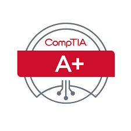

Cybersecurity Certifications
Prepare for success in the field with some crucial certifications to back up your learning.
This module will touch on what are considered the three foundational certifications any student interested in a career in IT/Cyber will want to pursue.
It will also talk about other potential certifications a person wishing to acquire can tackle and add to their resume.
The Big Three Certifications

CompTIA A+
Learn more about CompTIA A+
Cost: $246.00 1 Exam Voucher, $359.00 1 Exam Voucher + 1 Exam Retake
The CompTIA A+ certification is actually two pieces that combine to form the entire A+ cert. There is the 1101 and 1102 section,
both of these tests are required to be undertaken and passed to receive the entire A+ certification.
The knowledge base required to pass is widely considered to be mostly fundamental IT knowledge with a few in-depths into Networking, and the hardware of the computer.
This is considered the first of The Big Three that a person is recommended to acquire and is the most basic knowledge base of the three. This one is typically skipped by students that are already
farther along in their IT/Cybersecurity career, or studies but even if some say it can be skipped, it still is considered valuable by many employers to have.
A+ Real Life Practice Example Questions

CompTIA Security+
Learn more about CompTIA Security+
Cost: $392.00 1 Exam Voucher, $565.00 1 Exam Voucher + 1 Exam Retake
The CompTIA Security+ certification is the foundational certification of the Cybersecurity career path. It covers all fundamental knowledge relating to Security, and Security practices
and is considered one of the best entry level certifications a student can get. The knowledge base of this test is more in-depth than the previous A+ certification and is considered often much harder
but the rewards of obtaining it are great for your resume and further career in Cybersecurity.
Security+ Real Life Example Practice Questions

CompTIA Network+
Learn more about CompTIA +
Cost: $358.00 1 Exam Voucher, $462.00 1 Exam Voucher + 1 Exam Retake
The CompTIA Network+ certification is the third in the line of The Big Three and will round out any hopeful entry level Cybersecurity employee. This certification contains a knowledge base concerning
everything there is to do with Networking. This certification is considered on par difficulty wise with the Security+ certification but is often times considered more valuable due to the fact that
most of the Cybersecurity field is relating to the networking between hardware, and software. A very important certification and well deserving of its spot in The Big Three.
Network+ Real Life Practice Example Questions